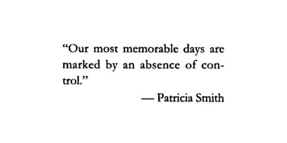

Slightly back
Айпод (или айфон) начинает играть видео на пару секунд раньше того момента, когда нажал на паузу. Сколько лет, а все еще прусь от этой фичи)
Айпод (или айфон) начинает играть видео на пару секунд раньше того момента, когда нажал на паузу. Сколько лет, а все еще прусь от этой фичи)
В терминале можно вызвать purge, чтобы очистить всю inactive память. В некоторых случаях оказывается полезным.

Удивительно точно. По крайней мере, во всех квартирах, в которых я жил в последнее время, эта проблема присутствует(
Есть во всем этом один неприятный нюанс.
Взять и вдруг найти по сходной цене софтину, которая лучше. И вроде всего десять баксов, а, с другой стороны, получается уже все двадцать, потому что ту, предыдущую, ты ведь тоже за десятку взял! И обе эти проги тебе совсем не нужны, а нужна вот эта - новая, за десятку. Всего.
Короче, как ни крути, а делать дешевые штуки - выгодно. А вот покупать...
Купил TaskPaper для айфона вместо SimpleNote)
Киндл — это, похоже, лучший девайс, который я приобрел за последнее время (про айфон я молчу). Супер штука.
В айПоде можно было бросать музыку с любого компа, в айФоне так нельзя. И нельзя выборочно синкать музыку на работе, а все остальное — дома.
Зато я вдруг вспомнил, что можно подкасты по вай-фаю апдейтить. То есть, если у тебя есть подкаст, то ты можешь следующий эпизод из любого места скачать, где есть вай-фай.
Сразу подумал про штуку, которая умела бы делать подкаст из папочки в дропбоксе: кинул туда сет, подождал пока засинкается, взял айфон, скачал эпизод, воткнул наушники и поехал на метро домой.
Я даже эту штуку писать начал. А потом оказалось, что подкасты обязательно регаются в iTunes и их ревьювят, а добавить просто произвольный подкаст нельзя (на самом деле можно, но тогда оно не умеет синкаться по вай-фаю), да еще и у Дропбокса АПИ оказался только для мобильных приложений (и они тоже ревьювят). С Дропбоксом, положим, можно было бы договориться, а с Эплом...
ps: можно было бы написать свою софтину, которая в дропбокс лазала бы, конечно, но где-то в форуме кто-то писал, что приложения не могут сторить музыку. Или играть умеют только со стрима. Короче, фиг вам, а не dropbox2podcast :(
И остается сегодняшние транзишины слушать на работе. Эх(

Acclaimed interviewer and broadcast journalist Charlie Rose engages America's best thinkers, writers, politicians, athletes, entertainers, business leaders, scientists and other newsmakers in one-on-one interviews and roundtable discussions.
Есть на hulu.com, который, правда, не работает в роисcии доступен только в сша :(
Чувак 16 лет рисует себя каждый день.
Этот портрет под буспироном (гуглится), в похожих аналогичных условиях есть еще.
